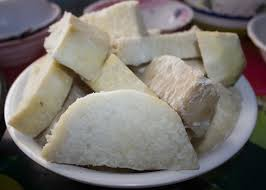

Home
Yam and oil recipe

Boiled yam and oil, either red oil or palm oil is about the most easiest meal to prepare, so dont worry this will be an easy one
Here are the list of ingredients you'll be using
Steps
- add around half cup of water to a clean pot
- peel your yam and cut into small size and add it to the boiling water
- add half spoon of salt, and one teaspoon of sugar
- then cover the pot and allow to boil for about 20minutes
- after 20minutes serve your yam adding oil to the side and a pinch of salt